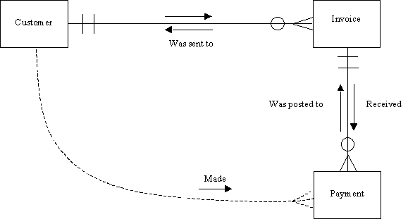
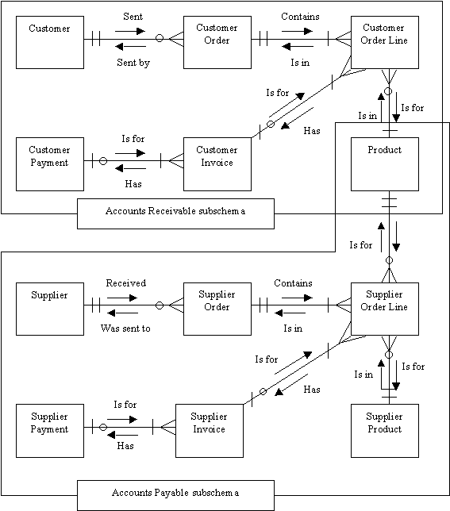

|
|
|
Close Help | ||||||||||||||
Chapter 3 : Entity - Relationship Modelling
The aims of this chapter are:
3.1 Introduction
When a relational database is to be designed, an entity-relationship diagram is drawn at an early stage and developed as the requirements of the database and its processing become better understood. Drawing an entity-relationship diagram aids understanding of an organization's data needs and can serve as a schema diagram for the required system's database. A schema disgram is any diagram that attempts to show the structure of tha data in a database. Nearly all systems analysis and design methodologies contain entity-relationship diagramming as an important part of the methodology and nearly all CASE (Computer Aided Software Engineering) tools contain the facility for drawing entity-relationship diagrams. An entity-relationship diagram could serve as the basis for the design of the files in a conventional file-based system as well as for a schema diagram in a database system.
The details of how to draw the diagrams vary slightly from one method to another, but they all have the same basic elements: entity types, attributes and relationships These three categories are considered to be sufficient to model the essentially static data-based parts of any organization's information processing needs.
3.2 Entity Types
An entity type is any type of object that we wish to store data about. Which entity types you decide to include on your diagram depends on your application. In an accounting application for a business you would store data about customers, suppliers, products, invoices and payments and if the business manufactured the products, you would need to store data about materials and production steps. Each of these would be classified as an entity type because you would want to store data about each one. In an entity-relationship diagram an entity type is shown as a box. In Fig. 3.1, CUSTOMER is an entity type. Each entity type is shown once. There may be many entity types in an entity-relationship diagram. The name of an entity type is singular since it represents a type.
An entity type is considered to be a set of objects. For this reason some people use the alternative term entity set. An entity is simply one member or example or element or instance of the type or set. So an entity is one individual within an entity type. For example, within the entity type CUSTOMER, J. Smith might be one entity. He is an individual entity within the type, an element in the set, an instance of the type 'customer'.
Fig. 3.1 An entity type CUSTOMER and one of its attributes Cus_no
3.3 Attributes
The data that we want to keep about each entity within an entity type is contained in attributes. An attribute is some quality about the entities that we are interested in and want to hold on the database. In fact we store the value of the attributes on the database. Each entity within the entity type will have the same set of attributes, but in general different attribute values. For example the value of the attribute ADDRESS for a customer J. Smith in a CUSTOMER entity type might be '10 Downing St., London' whereas the value of the attribute 'address' for another customer J. Major might be '22 Railway Cuttings, Cheam'.
There will be the same number of attributes for each entity within an entity type. That is one of the characteristics of entity-relationship modelling and relational databases. We store the same type of facts (attributes) about every entity within the entity type. If you knew that one of your customers happened to be your cousin, there would be no attribute to store that fact in, unless you wanted to have a 'cousin-yes-no' attribute, in which case nearly every customer would be a `no', which would be considered a waste of space.
3.4 Primary Key
Attributes can be shown on the entity-relationship diagram in an oval. In Fig. 3.1, one of the attributes of the entity type CUSTOMER is shown. It is up to you which attributes you show on the diagram. In many cases an entity type may have ten or more attributes. There is often not room on the diagram to show all of the attributes, but you might choose to show an attribute that is used to identify each entity from all the others in the entity type. This attribute is known as the primary key. In some cases you might need more than one attribute in the primary key to identify the entities.
In Fig. 3.1, the attribute CUS_NO is shown. Assuming the organization storing the data ensures that each customer is allocated a different cus_no, that attribute could act as the primary key, since it identifies each customer; it distinguishes each customer from all the rest. No two customers have the same value for the attribute cus_no. Some people would say that an attribute is a candidate for being a primary key because it is `unique'. They mean that no two entities within that entity type can have the same value of that attribute. In practice it is best not to use that word because it has other connotations.
As already mentioned, you may need to have a group of attributes to form a primary key, rather than just one attribute, although the latter is more common. For example if the organization using the CUSTOMER entity type did not allocate a customer number to its customers, then it might be necessary to use a composite key, for example one consisting of the attributes SURNAME and INITIALS together, to distinguish between customers with common surnames such as Smith. Even this may not be sufficient in some cases.
Primary keys are not the only attributes you might want to show on the entity-relationship diagram. For example, in a manufacturing organization you might have an entity type called COMPONENT and you want to make it clear on the entity-relationship diagram that the entities within the type are not single components but a component type such as a BC109 transistor. There are thousands of BC109s in stock and any one will do for any application. It is therefore not necessary to identify each BC109 differently (they all look and work the same). However you might want to distinguish BC109s from another transistor type BC108. To make it clear that you are considering all the BC109s as one entity and all the BC108s as another entity, you might put the attribute QIS (quantity in stock) on the entity-relationship diagram as in Fig. 3.2. This makes it clearer at the entity-relationship model level that each entity in the entity type is in fact a stock item of which there will be several in stock. Any doubts on this point should be resolved by inspecting the entity description, which shows all the attributes of the entity type and (ideally) their meaning. The primary key might be STOCK_NO and one of the attributes QIS, which should remove any doubt on this point.
Fig. 3.2 A well-placed attribute may clarify the meaning of an entity type.
In a quality control situation however you might be interested in individual components (`pieces') and you would then consider each piece as an entity within the entity type BC109. STOCK_NO would not then be an adequate primary key.
Object Oriented Analysis, which is sometimes considered as an alternative to entity-relationship modelling (see chapter 11), focuses on this distinction between object and type, making it clear that it is possible for an item to be both an object (instance, entity) and a type (class, entity type) at the same time. There is generally no problem in coping with this in entity-relationship modelling provided the modeller makes clear what he or she means. In this example we have seen that the simple placing of a well-chosen attribute on the entity-relationship diagram helps clear up any ambiguity. It is an important skill of the systems analyst and database designer to be able to recognize and control such ambiguities where they arise. Careful naming of entity types is another device to enhance clarity and reduce ambiguity. Changing the name of COMPONENT to COMPONENT_TYPE would be a further improvement.
Fig. 3.3(a) uses the idea of a card file and individual cards within it as being analogous to an entity type and an entity respectively. In Fig. 3.3(b) the set - element model is used to show the same thing, and in Fig.3.3(c) the entity-relationship model for the same situation is shown. These are three different models of the same phenomenon. Notice that the entity-relationship model version does not explicitly show individual entities. You are meant to know that 'within' the entity type CUSTOMER there are lots of customer entities.
Fig. 3.3 Three ways of thinking of an entity type.
Apart from serving as an identifier for each entity within an entity type, the primary key also serves as the method of representing relationships between entities. The primary key becomes a foreign key in all those entity types to which it is related in a one-one or one-many relationship type. The concept of foreign keys is discussed in detail in chapter 4.
3.5 Relationship Types
The first two major elements of entity-relationship diagrams are entity types and attributes. The final element is the relationship type. Sometimes, the word 'types' is dropped and relationship types are called simply 'relationships' but since there is a difference between the terms, one should really use the term relationship type.
Real-world entities have relationships between them, and relationships between entities on the entity-relationship diagram are shown where appropriate. An entity-relationship diagram consists of a network of entity types and connecting relationship types. A relationship type is a named association between entities. Individual entities have individual relationships of the type between them. An idividual person (entity) occupies (relationship) an individual house (entity). In an entity-relationship diagram, this is generalized into entity types and relationship types. The entity type PERSON is related to the entity type HOUSE by the relationship type OCCUPIES. There are lots of individual persons, lots of individual houses, and lots of individual relationships linking them.
There can be more than one type of relationship between entities. For an example of three different relationship types between two entity types see Fig. 3.31. Fig. 3.4 shows a single relationship type 'Received' and its inverse relationship type 'Was_sent_to' between the two entity types CUSTOMER and INVOICE. It is very important to name all relationship types. The reader of the diagram must know what the relationship type means and it is up to you the designer to make the meaning clear from the relationship type name. The direction of both the relationship type and its inverse should be shown to aid clarity and immediate readibility of the diagram. The tense of the relationship type should also be clear from its name.
Fig. 3.4 Representing a relationship on an entity-relationship diagram.
In the development of a database system, many people will be reading the entity-relationship diagram and so it should be immediately readable and totally unambiguous. When the database is implemented, the entity-relationship diagram will continue to be used by application programmers and query writers. Misinterpretation of the model can result in many lost man-hours going down wrong tracks. There is little harm in putting redundant information into your entity-relationship model. What seems redundant to you can sometimes remove potential ambiguities for other users of your diagram. Get your user to explain your entity-relationship model to you! Then you will see how clear it is.
In Fig. 3.4 what is being 'said' is that customers received invoices and invoices were_sent_to customers. How many invoices a customer might have received (the maximum number and the minimum number) and how many customers an invoice might have been sent to, is shown by the degree of the relationship type. The 'degree' of relationship types is defined below.
In Fig. 3.5 three different ways of illustrating the existence of a relationship type are shown. In (a), in which the CUSTOMER and INVOICE entity types are represented by index cards, it can be seen that there is a `received' relationship type between customer number 2 and invoice numbers 7 and 9. Customer number 2 has `received' these two invoices. These two invoices `were_sent_to' customer number 2. In (b) the same information is shown using set notation with the relationship type `received' and inverse relationship type `was_sent_to' linking customer entities and invoice entities. Fig. 3.5(c) is the entity-relationship diagram version and information about individual entities and which entity is linked to which is lost. The reason for this is simply that in a real database there would be hundreds of customer and invoice entities and it would be impossible to show each one on the entity-relationship diagram.
Fig. 3.5 Three ways of thinking of a relationship.
It was mentioned earlier that there is in fact a distinction between relationships and relationship types. In Fig. 3.5(a) and (b) there are in fact two relationships shown: one between customer 2 and invoice 7 and one between customer 2 and invoice 9, so strictly speaking `received' is a relationship type consisting of a number of relationships between entity types. However, this distinction is sometimes dropped (it frequently is in this book), and both are given the name `relationship'.
Finally, note that relationships between entity types are represented in a relational database using foreign keys. The value of the primary key of one entity is placed in every entity of the second type to which it is related. This is discussed in detail in chapter 4.
3.6 Ways of Classifying Relationships Types
A relationship type can be classified by the number of entity types involved, and by the degree of the relationship type, as is shown in Fig. 3.6. These methods of classifying relationship types are complementary. To describe a relationship type adequately, you need to say what the name of the relationship type and its inverse are and their meaning, if not clear from their names and you also need to declare the entity type or types involved and the degree of the relationship type that links the entities. We now discuss the latter two items.
The purpose of discussing the number of entity types is to introduce the terms unary relationship type, binary relationship type, and ternary relationship type, and to give examples of each. The number of entity types in the relationship type affects the final form of the relational database.
The purpose of discussing the degree of relationship types is to define the relevant terms, to give examples, and to show the impact that the degree of a relationship type has on the form of the final implemented relational database.
Fig. 3.6 Ways of classifying relationships.
3.6.1 Number of Entity Types
If a relationship type is between entities in a single entity type then it is called a unary relationship type. One example is the relationship `friendship' between entities within the entity type PERSON. If a relationship type is between entities in one entity type and entities in another entity type then it is called a binary relationship type because two entity types are involved in the relationship type. An example is the relationship 'Received' in Fig. 3.4 and Fig. 3.5 between customers and invoices. Another example of a binary relationship type is 'Purchased' between entity types CUSTOMER and PRODUCT. Two entity types are involved so the relationship is binary.
It is possible to model relationship types involving more than two entity types. For example a LECTURER 'recommends' a certain TEXT on a certain COURSE. Here the relationship type is 'recommends'. This relationship type is said to be a ternary relationship type since three entity types are involved. Examples of unary, binary and ternary relationship types are shown in Fig. 3.7.
Fig. 3.7 There can be one, two, three or more entity types involved in a relationship.
It is sometimes possible to replace higher-order relationship types (ternary and above) by a collection of binary relationship types linking pairs of the original entity types. However this is not always possible (although as we shall see, in 3.6.1.1 below, the high-order relationship can always be redefined, with suitable renaming, as an entity type). In the example cited above concerning lecturers recommending textbooks on courses, it is not possible to replace the ternary relationship type 'recommends' with two or even three binary relationship types because information would be lost.
Fig. 3.8 (a) shows the ternary relationship type 'recommends' linking LECTURER, TEXT and COURSE.
In Fig. 3.8(b) an attempt has been made to replace the ternary relationship type with two binary relationship types. LECTURERs 'recommend' TEXTs and TEXTs 'are_used_on' COURSEs. The fact that a lecturer recommends a text and that text is used on a course does not necessarily mean that that lecturer recommended that text for that course. The text might be used on the course and recommended by someone else, whereas our lecturer does recommend that text but for a different course.
In Fig. 3.8(c) it is possible to tell which texts a lecturer recommends and which courses he or she teaches on, but not which texts are used on a course or which courses use a given text. The fact that a lecturer recommends a text and teaches a course does not imply that he or she recommends that text for that course.
In Fig. 3.8(d) it is possible to tell which courses a lecturer teaches and which texts a course uses but not which texts a teacher recommends. Only if every course had only one lecturer would (d) be satisfactory because then the fact that a course used a text implies who recommended it. Otherwise (d) is unsatisfactory.
In Fig. 3.8(e) it is possible to tell who recommends which texts, who teaches which courses, and which texts are used on which courses. However it is still not possible to ascertain, in general, the answers to questions like:
'Which text does Mr Smith recommend for the 4th year Database course?'
The reason is that even though Mr Smith may recommend text1 and Mr Smith teaches on 4th year Database, it is not known whether it was Mr Smith who recommended the text for the course, because he may have recommended the text for another course, and another lecturer on the 4th year Database course may have recommended text1. The only satisfactory relationship type is that shown in Fig. 3.8(a).
3.6.1.1 Removing Ternary relationship types
It is advantageous to remove ternary and higher order relationship types. One reason is that it might be considered more `natural' to think of entity types having attributes than relationship types having them. It is in fact always possible to remove these high-order relationship types and replace them with an entity type. A ternary relationship type is then replaced by an entity type and three binary relationship types linking it to the entity types which were originally linked by the ternary. A quartenary relationship type would be replaced by an entity type and four relationship types and so on.
In Fig. 3.8(e), the ternary relationship type 'recommends' (verb) can be replaced with an entity type 'recommendation' (noun), and a binary relationship between it and each of the entity types LECTURER, TEXT and COURSE (three binary relationships in all). It is natural to think about the attributes of a recommendation but not so natural to think about the attributes of a relationship type `recommends'. Typical non-key attributes of the RECOMMENDATION might be DATE_RECOMMENDED and STATUS (whether the recommendation has been approved or not). Another advantage of replacing the ternary relationship type is that a ternary or higher-order relationship type cannot in any real sense have a direction. Another is that in Fig. 3.8(a) it is not clear from the diagram (without pre-existing contextual knowledge) what is recommending what to what. Does a lecturer recommend a course in a text? Or does a lecturer recommend a text for a course?
When the single ternary relationship type has been replaced by three binary relationship types, Each of the relationships and their inverses can be named, lending considerably more semantic information to the diagram. Clearly, replacing the ternary has allowed us to convey more semantics about the real-world situation than before.
The general conclusion then is that the only relationship types that should be shown on the entity relationship diagram should be either unary (involving one entity type) or binary (involving two entity types).
As stated, the naming of the new entity type and the new relationship types is important. Inappropriately naming the entity type or omitting or inappropriately naming the relationship types will lead to misunderstanding and consequent incorrect processing of data (possibly caused by programmers misunderstanding the `meaning' of the database schema) and incorrect data appearing on the database. As a general guide entity types should have noun names (e.g. RECOMMENDATION) and relationships should have the form of a verb (e.g. `made' or `concerned' or `was_for').
We shall return to this example when we study Fourth Normal Form. That is one of the methods in Normalization, which is a more detailed and mechanical method of categorizing data.
3.6.2 The Degree of a Relationship Type
The second way of classifying relationship types is to state their degree. As stated in the preceding section, the number of entity types and the degree both have an important impact on the final design of the relational database. The use of terminology related to the degree of a relationship type varies between different authors (See Fig. 3.9). In this book, we use the James Martin terminology.
| Source | No. of entity types in the relationship |
Minimum number of participants in the relationship | Maximum number of participants in the relationship |
| Author 1: C.J. Date | Degree | ||
| Author 2: James Martin | Optionality | Cardinality | |
| Author 3 | Optionality | Degree | |
| Author 4 | Degree | ||
| Author 5 | Optionality | Cardinality and Degree | |
| Author 6 | Degree | Minimum Cardinality | Maximum Cardinality |
| Author 7 | Degree |
Fig. 3.9 Assorted usage of the entity-relationship terminology concerning relationships.
The degree of a relationship type concerns the number of entities within each entity type that can be linked by a given relationship type. Fig 3.10 shows how this degree is shown on an entity relationship diagram. There are two directions of a relationship type. Each is named and each has a minimum degree and a maximum degree.
3.6.2.1 Cardinality and Optionality
The maximum degree is called cardinality and the minimum degree is called optionality. In another context the terms 'degree' and 'cardinality' have different meanings. In [Date 4th ed. p240] 'degree' is the term used to denote the number of attributes in a relation while `cardinality' is the number of tuples in a relation. Here, we are not talking about relations (database tables) but relationship types, the associations between database tables and the real world entity types they model.
There are three symbols used to show degree. A circle means zero, a line means one and a crowsfoot means many. The cardinality is shown next to the entity type and the optionality (if shown at all) is shown behind it. Refer to Fig. 3.10(a). In Fig. 3.10(b) the relationship type R has cardinality one-to-many because one A is related by R to many Bs and one B is related (by R's inverse) to one A. Generally, the degree of a relationship type is described by its cardinality. R would be called a 'one-many' or a 'one-to-many' or a '1 : N' relationship type. To fully describe the degree of a relationship type however we should also specify its optionality.
Fig. 3.10 Relationship degree.
The optionality of relationship type R in Fig. 3.10(b) is one as shown by the line. This means that the minimum number of Bs that an A is related to is one. A must be related to at least one B. Considering the optionality and cardinality of relationship type R together, we can say that one A entity is related by R to one or more B entities. Another way of describing the optionality of one, is to say that R is a mandatory relationship type. An A must be related to a B. R's optionality is mandatory. With optionality, the opposite of 'mandatory' is optional. In Fig. 3.10(b) the inverse of R happens to be optional, as shown by the circle. The inverse of R is an optional relationship type. This means that one B might not be related (by the inverse of R) to any A. There may be a B entity not related to any A entity. Considering the optionality and cardinality of the inverse of R together, we can say that a B entity is related (by the inverse of R) to zero or one A entities.
Fig. 3.11 A set diagram representation of Fig. 3.10(b).
The case of Fig. 3.10(b) is shown in the form of a set diagram in Fig 3.11. The two entity types A and B are shown as sets (the oval shapes). The entities are shown as small boxes: elements in the sets. The relationship type R links A entities to B entities. It shows which A entities are related to which B entities. Notice that it is possible for an A entity to be related to one or more B entities. The maximum number of Bs for a given A is 'many' (for example the first A entity is related to two Bs) and the maximum number of As for a given B is one. This establishes the one-many cardinality of R. The minimum number of Bs for a given A is 1. (There are no A entities without a B entity). This establishes mandatory optionality of R. There can exist a B that is not related to any A; for example the last B entity. This establishes the `optional' optionality of the inverse of R.
Fig. 3.12 summarizes the terminology in another example.
Fig. 3.12 More examples of our relationship terminology.
3.6.2.2 Deriving a One-Many relationship type
In Fig. 3.13 the procedure for deriving the degree of a relationship type and putting it on the entity relationship diagram is shown. The example concerns part of a sales ledger system. Customers may have received zero or more invoices from us. The relationship type is thus called `received' and is from CUSTOMER to INVOICE. The arrow shows the direction. The minimum number of invoices the customer has received is zero and thus the `received' relationship type is optional. This is shown by the zero on the line. The maximum number of invoices the customer may have received is `many'. This is shown by the crowsfoot. This is summarized in Fig. 3.13(a). To complete the definition of the relationship type the next step is to name the inverse relationship type. Clearly if a customer received an invoice, the invoice was sent to the customer and this is an appropriate name for this inverse relationship type. Now consider the degree of the inverse relationship type. The minimum number of customers you would send an invoice to is one; you wouldn't send it to no-one. The optionality is thus one. The inverse relationship type is mandatory. The maximum number of customers you would send an invoice to is also one so the cardinality is also one. This is summarized in Fig. 3.13(b). Fig. 3.13(b) shows the completed relationship.
Fig. 3.13 Deriving a 1:N (one:many) relationship.
A word of warning is useful here. In order to obtain the correct degree for a relationship type (one-one or one-many or many-many) you must ask two questions. Both questions must begin with the word `one'. In the present case (Fig. 3.13), the two questions you would ask when drawing in the relationship line and deciding on its degree would be:
Question 1: One customer received how many invoices?
Answer: Zero or more.Question 2: One invoice was sent to how many customers?
Answer: One.
This warning is based on observations of many student database designers getting the degree of relationship types wrong. The usual cause of error is only asking one question and not starting with the word 'one'. For example a student might say (incorrectly): 'Many customers receive many invoices' (which is true) and wrongly conclude that the relationship type is many-many. The second most common source of error is either to fail to name the relationship type and say something like 'Customer to Invoice is one-to-many' (which is meaningless) or give the relationship type an inappropriate name.
3.6.2.3 Deriving a Many-Many relationship type
Fig. 3.14 gives an example of a many-many relationship type being derived.
Fig. 3.14 Deriving a M:N (many-many) relationship.
The two questions you have to ask to correctly derive the degree of this relationship (and the answers) are:
Question 1: One customer purchased how many product types?
Answer: One or more.Question 2: One product type was purchased by how many customers?
Answer: Zero or more.
Note that the entity type has been called PRODUCT TYPE rather than PRODUCT which might mean an individual piece that the customer has bought. In that case the cardinality of 'was_purchased_by' would be one not many because an individual piece can of course only go to one customer. This point is another common source of error: the tendency to call one item (e.g. an individual 4" paintbrush) a product and the whole product type (or 'line') (e.g. the 4" paintbrush product type) a product. You should make the meaning clear from the name you give the entity type.
We have assumed here that every customer on the database has purchased at least one product; hence the mandatory optionality of `purchased'. If this were not true in the situation under study then a zero would appear instead. The zero optionality of 'was_purchased_by' is due to our assumption that a product type might as yet have had no purchases at all.
In practice it is wise to replace many-many relationship types such as this with a set (often two) of one-many relationship types and a set (often one) of new, previously hidden entity types. This is covered in a later section in this chapter.
3.6.2.4 Deriving a One-One relationship type
Fig. 3.15 gives an example of a one-one relationship type being derived. It concerns a person and his or her birth certificate. We assume that everyone has one and that a certificate registers the birth of one person only.

Fig. 3.15 Deriving a 1:1 (one:one) relationship.
Question 1: How many birth certificates has a person?
Answer: One.Question 2: How many persons is a birth certificate owned by?
Answer: One.
Where there is a one-one relationship type we have the option of merging the two entity types. The birth certificate attributes may be considered as attributes of the person and placed in the person entity type. The birth certificate entity type would then be removed. There are two reasons for not doing this. Firstly, the majority of processing involving PERSON records might not involve any or many of the BIRTH_CERTIFICATE attributes. The BIRTH CERTIFICATE attributes might only be subject to very specific processes which are rarely executed. The second reason for not merging might be that the BIRTH CERTIFICATE entity type has relationship types to other entity types that the PERSON entity type does not have. The two entity types have different relationship types to other entity types.
3.6.3 Mutually Exclusive relationship types
In some cases the existence of one kind of relationship type precludes the existence of another. Entities within an entity type A may be related by a relationship type R to an entity in entity type B or entity type C but not both. The relationship types are said to be mutually exclusive. Usually both relationship types will have the same name, as in the following example. In Fig. 3.16 a fault report may have been for a computer or a printer but not both. The fact that it might not have concerned a computer is shown by the zero optionality of the upper 'was_for' relationship type between FAULT REPORT and COMPUTER. The fact that it might not have concerned a printer is shown by the zero optionality of the lower 'was_for' relationship type between FAULT REPORT and PRINTER. However a fault report must have been for either a computer or a printer (in this example). The zero optionality cannot apply for both. Both this and the fact that the fault report can have been for a maximum of one of the two entity types is indicated by the arc on the diagram linking the two relationship types. In summary then, the arc shows that a fault report can be for a maximum and a minimum of one entity from the types COMPUTER and PRINTER.
Fig. 3.16 A mutually exclusive relationship 'Was for'.
The set of relationship types is normally assumed to be exhaustive in one sense (i.e. there are not any other relationship types) because it is customary to put all relationships of interest on the diagram. However the set of relationship types might not be exhaustive in the sense that a given entity A might not be related to an entity in any of the other entity types in the group marked by the arc. This second type of exhaustiveness (or lack of it) cannot be shown using this arc device.
Another limitation of the arc device is that it cannot show excluded and mandatory combinations of permitted relationships. For example, it might be the case that an entity in type A might be related to some subset of entities from types B, C and D. It might be that if it is related to a B and a C then it cannot be related to a D entity. It might be that if it is related to a B then it must also be related to either a C or D but not both.
A further constraint type that may be required in practice is that an entity of type A may legally be related to any n entities from a selection of m entity types.
The suggestion being made here is that current methods for drawing entity relationship diagrams could be extended to allow these types of relationship constraints to be shown on the diagram.
3.6.4 Redundant Relationship Types
In Fig. 3.17 there is a 'received' relationship type between CUSTOMER and INVOICE and an 'obtained' relationship type between INVOICE and PAYMENT. It is possible via 'received' to find which invoices have been received by a given customer. It is possible to find the customer an invoice was sent to via the 'was_sent_to' relationship type (the inverse of `received'). Using the 'obtained' relationship type it is possible to find the payments that a given invoice has received and via its inverse 'was_posted_to', the invoice that a payment was posted to. Using the composition of 'received' and 'obtained' (that is, using one relationship type followed by the other), it is possible to find all the payments that a given customer has made. By navigating from CUSTOMER to INVOICE and thence to PAYMENT this can be done.

Fig. 3.17 The 'Made' relationship is redundant.
Similarly, it is possible to find the sender of a payment using the composition of the two relationship types 'was_posted_to' and 'was_sent_to', navigating from PAYMENT to INVOICE to CUSTOMER.
If an extra (direct) relationship type from CUSTOMER to PAYMENT were to be implemented it would be redundant. If it showed only which customer sent a payment and (via its inverse) which payments a customer made, it would be unnecessary because it shows nothing that cannot be shown using compositions of the other two relationship types.
In general, when there are loops in your entity relationship diagram, be on the lookout for the possibility of breaking the loop at some point by removing a relationship type that can be synthesized from the composition of other relationship types on the diagram. This is often not possible because of the nature of the relationships i.e. their meaning.
In some rare cases you might consider it advisable to introduce a logically redundant relationship type simply out of consideration of efficiency.

Fig. 3.18 An entity-relationship diagram for a simple accounting system.
Fig. 3.18 shows the entity relationship diagram for a relatively simple accounting system. The top grouping of entity types and relationship types constitute a sales ledger ('accounts receivable' and 'debtors ledger' are two other names for this). The whole diagram will be used as a schema for the database holding such data and the sales ledger entity types and relationship types will be called the sales ledger subschema. The bottom subschema is the accounts payable subschema (also called the 'purchase ledger', because it shows what the company has purchased from its suppliers). Notice that subschemas may overlap, as here. The PRODUCT entity type is used in both contexts; sales and purchasing. Products are purchased and they are sold.
Returning to the subject of redundant relationship types, let us consider placing a 'redundant' relationship type between the entity type CUS and the entity type CUS_PAYMENT. There are many queries that could be answered using the schema shown, including:
'List all payments made by customer X'.
The problem with this query is that to answer it, it is necessary to navigate via four relationship types. Using the first relationship type 'made', all the customer orders are accessed. For each order, 'Contains' is used to access every order line. For each order line, the customer invoice (if any; an invoice might not yet have been sent. This is shown using an 'optional' circle at the left-hand end of the relationship type) is accessed and the payment is retrieved and then listed. The pseudo-code for this could be written as shown in Fig. 3.19.
RETRIEVE CUS record
OBTAIN customer's account number
RETRIEVE first CUS_ORDER record for this account
DOWHILE not end of CUS_ORDERsOBTAIN order's order number
RETRIEVE first CUS_ORDER_LINE record for this order number
DOWHILE not end of CUS_ORDER_LINEsOBTAIN order line's invoice number
IF invoice number is not nullRETRIEVE CUS_INVOICE record for this inv no
OBTAIN invoice's payment number
IF invoice's payment number is not nullRETRIEVE PAYMENT record for this pmt no
LIST payment detailsENDIF
ENDIF
RETRIEVE next CUS_ORDER_LINE record for this order noENDWHILE
RETRIEVE next CUS_ORDER for this account numberENDWHILE
Fig. 3.19 Pseudo Code for 'List all payments made by Customer x'
This pseudo-code assumes that a customer order line that has not yet been invoiced is indicated by a null value for the invoice number attribute in the order line and that an invoice that has not yet been paid is indicated in a similar way using a null value for the payment number in the invoice record. It must be noted also that this pseudo-code may be considered rather `physical' since it talks about records rather than real-world entities. However in general every entity of interest will be modelled by a database record. Also, in a relational database, the relationship types are shown using foreign keys such as invoice number in CUS_ORDER_LINE and payment_no in CUS_INVOICE. In other types of database, in particular the older network (CODASYL) and hierarchical databases, foreign keys are not used so the details of the pseudo-code in Fig. 3.19 would be different. How relationship types are represented, including a discussion of foreign keys, is covered in chapter 4.
The pseudo-code might be considered rather complex for such a simple query. It can be considerably simplified by adding a `redundant' direct relationship type from CUS to CUS_PAYMENT. A foreign key (the customer's account number) would be placed in CUS_PAYMENT as an extra attribute. While unnecessary, as we have said, this relationship type is advantageous in that the pseudo-code for the query is now as shown in Fig. 3.20, which is much simpler.
RETRIEVE CUS record
OBTAIN customer's account number
RETRIEVE first CUS_PAYMENT record
DOWHILE not end of CUS_PAYMENTs
RETRIEVE PAYMENT record for this account number
LIST payment details
RETRIEVE next CUS_PAYMENT for this account number
ENDWHILE
Fig. 3.20 Simplified Pseudo Code for 'List all payments made by Customer x'
In summary, redundant relationship types should be identified and in genaral removed. However, implementing a redundant relationship type into the database schema may make the programming of some queries, reports and updates simpler. The major disadvantage of having redundant data on the database is that it may lead to inconsistency. The redundant one-many relationship type we are considering putting between CUS and CUS_PAYMENT would be implemented by placing a foreign key (the customer's account number) into the CUS_PAYMENT entity type. If this value was different from the value obtained by navigating back via the long route (CUS_PAYMENT, CUS_INVOICE, CUS_ORDER_LINE, CUS_ORDER, CUS) then this would constitute an inconsistency.
3.7 Alternative Ways of Drawing relationship types
The method we have adopted for drawing entity-relationship diagrams is based on the methodology known as Information Engineering and implemented in the CASE tool IEW (Information Engineering Workbench). Avison & Fitzgerald (1988) give more detail on the history of the Information Engineering approach. ORACLE*CASE, which is an advanced integrated CASE tool used with the ORACLE DBMS, and SSADM, the widely-propogated systems analysis method use a different convention and that is discussed first. Following that, Chen diagrams are described. Both are compared and contrasted with our adopted method.
3.7.1 SSADM Convention
In the Systems Analysis method known as SSADM (Structured Systems Analysis and Design Method) a different convention for drawing in the relationship types between entity types is adopted. Instead of denoting the name of a relationship type and its inverse, that is, thinking of both directions of a relationship type, SSADM shows one end of a relationship type and the other end. This is closely analogous to using directions as we have done, but it leads to a rather curious effect. The cardinality of a relationship type is shown at one end of the relationship line and the optionality at the other!
This is illustrated in Fig. 3.21. In (a) the usual method of representing a relationship type has been shown. Note that R is a one-many optional relationship type and its inverse S is mandatory. R is optional because an A can be related to zero or more B's. S is mandatory because a B can be related to a minimum of one A's.
In (b), the SSADM method of showing the same relationship type is shown. A may be related to one or more B's by relationship R. The word `may' is denoted by the dotted line. It is meant to convey the idea that an A might not be related to any B. That is shown at the left end of the relationship type. The right end of the relationship type has a crowsfoot meaning `one or more', so A can be related to zero, one or more B's and this is expressed by the sentence `an A may be related to one or more B's'. The two disadvantages of this notation are :
(b) It is semantically untidy. To say that A may be related to one or more B's and mean A is related to zero or more B's will lead to error.
Another example of the SSADM convention for representing relationship types is shown in Fig. 3.22. In (a) we can see that R is a many-one optional relationship type and S is mandatory. In (b) this results in a dotted crowsfoot at the R end even though R is mandatory. The conventions shown are those of SSADM Version 4. In Version 3 the treatment of optionality was even more problematic. See for example [Ref. 1 p27]. In version 3, a relationship either existed or it didn't. Optionality was shown at the centre of the relationship line and it was impossible to distinguish between one direction of a relationship type being optional and the other direction being optional. So for version 3 the sentence `A boy can eat zero or more ice-creams' was equivalent to the sentence `An ice-cream can be eaten by zero or more boys'. In version 4 the first sentence reads `A boy may eat one or more ice-creams'. These are predictable sources of error.
Another difference between our terminology and that of SSADM is that SSADM speaks of entities taking part in a number of relationships rather than being related to a number of other entities by a relationship (type). Look at Fig. 3.23. There are several sources of possible confusion here and it is instructive to go through them. Having a loan participating in a current loan relationship type is a bizarre idea. The truth is (probably) that the borrower (entity type) has made (relationship) one or more (degree) loans (entity type) some of which are current (attribute).
You should be able to `read' an entity-relationship model. The sentence `A borrower has made one or more current loans' makes sense. The sentence `A borrower current loans one or more loans' does not. If this basic SUBJECT-VERB-OBJECT structure is not present in your entity-relationship model then it will be difficult to understand and will lead to error.
The confusion in Fig. 3.23 has probably arisen because the designer was thinking about the number of current loan relationships the borrower was involved in rather than the number of loans a borrower may have made. Rather than thinking how many relationships an entity is involved in, you had better ask how many entities the given entity is related to.
EXERCISE
--------
2. Here are two English sentences:
`A refund may be given to a customer'.
(a) Model these sentences using the SSADM convention. Comment on the difficulty of placing the optionality.
(b) Model the same sentences using the IE convention. Note that this would require you to convert the sentences into:
`A customer receives zero or more refunds'.
`A refund is given to a customer'.
(c) In the light of this example, discuss the following proposition:
`The SSADM Version 4 convention on LDS optionality is more likely to lead to error than the IE convention since the former may reproduce ambiguities in the English descriptions of optionalities'.
3.7.2 Chen Diagram Convention
One other convention for drawing relationships uses diamonds to show the relationship name. This is the convention used by P. Chen, the inventor of entity-relationship diagrams. [Ref. xxx] A Chen diagram is shown in Fig. 3.24 with thee equivalent using our conventions below. Note that Chen allowed many-many relationship types to go unresolved (possibly losing `hidden' entity types). He allowed these many-many relationship types to have attributes. He also allowed ternary and higher order relationship types to remain as relationship types and often named relationship types just by listing their associated entity types (he called then entity sets). The role that an entity took with respect to a relationship can be shown on a Chen diagram (see for example `worker' in Fig. 3.24 indicating that the role a worker has to the `project-worker' relationship is that of a worker).
Fig. 3.25 shows a larger Chen diagram. Note the many-many relationship types, the ternary relationship type SUPP-PROJ-PART, and the unary `relationship' COMPONENT. The double box around the DEPENDENT entity type indicates that DEPENDENT is a weak entity relation, meaning that, in this example, an employee's dependents are not identified solely by one or more of their own attributes, but via their relationship (EMP-DEP) with their employee parent. Part of the primary key for DEPENDENT would thus be the primary key for EMPLOYEE. If DEPENDENT were related to some other entity type, the relationship would be a weak relationship relation because the link between DEPENDENT and the new entity type would contain the primary key of EMPLOYEE also. Any update to that key value or deletion in EMPLOYEE would have knock-on effects on DEPENDENT and the new entity type because, in the case of the deletion for example, there would be `floating' dependents not any longer linked to an employee, and probably no longer of any interest to the users of the database. This existence dependency of DEPENDENTs on EMPLOYEEs os shown in Fig. 3.25 by the arrow between the EMP-DEP relationship type and the weak entity relation DEPENDENT. The ideas of weak entity and relationship relations and existence dependency have implications with regard to data integrity, which is the completeness and lack of redundancy and inconsistency in the database as a whole.
The direction of binary and unary relationship types is not shown on a Chen diagram. Neither are inverse relationship types. The direction of ternary relationship types is meaningless, but if the ternary were replaced by a meaningful entity type (if appropriate - see Section 3.6.1.1 above) then the directions of the new binary relationship types could be shown as could their names and those of their inverses.
Using our conventions for drawing entity-relationship diagrams, the SUPP-PROJ-PART ternary relationship type shown in Fig. 3.25 might be re-drawn as in Fig. 3.26(b). Note that redrawing it in this way calls into question the name of the new entity type and thus the nature of the old relationship. One possible meaning for the relationship type SUPP-PROJ-PART might have been that a SUPPLIER is committed to a CONTRACT ITEM which involves a commitment to supply certain parts for certain projects. (The actual meaning could only be found by resort to the real world situation that the schema is modelling). The quantities and relevant dates would be attributes of the CONTRACT ITEM. This would also call into question the existence of the CONTRACT in the real world, which itself may have attributes that should be modelled, for example the date that the contract was signed.
Finally, optionality is not shown on the original Chen diagram.
EXERCISE
--------
Redraw Fig. 3.25 using the IE conventions used in this chapter.
3.8 Splitting Many-Many relationship types (Hidden Entity Types)
Wherever a many-many relationship type exists it is advantageous to consider whether it should be split into a number of one-many relationship types (normally two) and a number (normally one) of new entity types. This process is shown in Fig. 3.27. The many-many relationship type R has been replaced by a new entity type X and a one-many relationship type S on one side and one or more one-many relationship types on the other side.
There are two main advantages in splitting in this way. Firstly, as was mentioned in Section 3.6.1.1, it may seem more `natural' to have attributes of an entity type rather than a relationship type, although as we have seen the original Chen diagrams allowed this. The second and major reason for splitting many-many relationship types is that more than one hidden entity types may emerge.
Fig. 3.28 gives an example where this happens. In (a) a many-many relationship type `purchased' is shown between entity types CUS (customer) and PROD (product). One customer may have purchased many products and one product may have been purchased by many customers. When splitting the many-many relationship type, the question is asked:
It occurred to the analyst in liaison with the user representative that what was `hidden' in the relationship type was in fact a customer order. Consequently Fig. 3.28(b) was drawn in which the new entity type ORDER appears. The relationship types `placed' and `requested' were then added and their degrees considered. The first relationship type `placed' turned out to be one-many but the `requested' relationship type was many-many (because an ORDER can request several products and a product can be requested on several orders). The many-many relationship type `requested' was then split and the new entity type drawn in as in Fig. 3.28(c). To name the new entity type the question was asked:
It was decided on reflection that the hidden entity type was an order line. The two new relationship types were named and their degrees considered. Since they both turned out to be one-many relationship types, the splitting process stopped, the new entity type ORDER_LINE and the new relationship types were added to the model and the attributes of the two new entity types ORDER and ORDER_LINE were considered. If the splitting of the original `purchased' relationship type had not been performed, the ORDER and ORDER_LINE entity types and their attributes would have remained hidden.
Fig. 3.29 gives another example of a many-many relationship type hiding an entity type. This time the relationship type is a unary relationship type, as we have called it, because it relates entities within one entity type. In this instance, parts contain and are contained in other parts. The relationship type is optional in both directions since some parts may have no sub-parts and some parts might not be conained in any part.
When the many-many relationship type is split, the hidden entity type ASSEMBLY_STEP is revealed. This name was chosen by considering the nature of the relationship, how it had been derived, and what it would be used for. Having found the entity type name, the relationship types were then named and their degrees decided upon. The two attributes of interest step_no and qty were then added. It had not occurred to the data analyst or user that these attributes should go onto the database until the new entity type had been `discovered'. Since both relationship types are one-many, there was no need for further splitting.
In Fig. 3.30(a) the entity-relationship model is `about' patients being referred from one hospital to another by doctors. Splitting the many-many unary `has_referral_to' relationship type reveals a REFERRAL relationship type and two roles for a hospital (shown as relationship type names), the sending hospital and the receiving hospital. Showing the referral as an entity type rather than a relationship type allows important relationships from DOCTOR (who made the referral) and PATIENT (who was referred) to be included.
EXERCISE
--------
2. Think of some examples where some of the relationship types between the entity types are one-one.
3. Think of some other entity type, not shown, that might be related to the entity type ASSEMBLY_STEP in Fig. 3.29.
4. Referring to Exercise 1 in Section 3.6.1.1:
(b) Split the many-many to reveal the new set (possibly one) of entity types.
3.9 More than one relationship type between Entity Types
It is possible for there to be more than one relationship type between a pair of entity types (and also between entities within the same entity type). Fig. 3.31(a) shows three different relationship types between the entity types EMPLOYEE and VEHICLE. Little further comment is required except to say that this is a further demonstration of two points already made. Firstly, every relationship type should be named. The names here distinguish the different relationship types from each other. It would therefore be meaningless to say that `Employee to Vehicle is one-many' or `Employee to Vehicle is many-many'. The second point is that the name and meaning of the relationship type determine its cardinality and optionality.
In Fig. 3.31(b) two distinct unary relationship types are shown defined on the one entity type PERSON.
EXERCISE
--------
2. Think of another realistic example in which there are two or more unary relationship types defined on an entity type.
3. Complete the modelling of the PERSON model in Fig. 3.31(b) by:
(b) Naming the new relationship types and determining their degree (cardinality and optionality)
3.10 Representing Trees and Networks
Two data structures that occur frequently in applications are the tree and the network. Fig. 3.32(a) shows the general structure of a tree represented as a graph. A graph is just a drawing consisting of number of nodes and edges. In the tree of Fig. 3.32(a) there are a number of nodes such as a, b, c, ... and a number of edges (lines) connecting the nodes. The tree is a very general data structure and can be used as a modelling method for many different types of computing application. In the applications we are considering, each node represents an entity and each edge represents a relationship between two nodes or another entity. In Fig. 3.32 the edges represent relationships. This tree diagram shows individual entities whereas the entity-relationship version in Fig. 3.32(b) generalizes this and also shows the name of the relationship type.
In a tree, there are no loops. The graph is `open'. Along one direction of an edge, (`down' the tree) a node can be connected to zero or more other nodes, but along the other direction it can be connected to zero or one nodes only. A typical example of this is shown in Fig. 3.33. The `root' or top of this tree is employee e1 who manages but is managed by no-one. One of the `leaves' of the tree is e4, who is managed, but manages no-one. Node e5 is managed by one employee and manages two others. In a tree of this type, the relationship type is optional in both directions to allow for the existence of a root and leaf nodes.
Fig. 3.34 shows a simple network, similar to Fig. 3.32, except that node h is connected back to node e, forming a loop. This means that a node may be related to zero or more nodes in both directions. There are loops. An example of a network is shown in Fig. 3.35. This is a particular case in which person A being related to person B implies that B is related to A by the same relationship. It does not however imply that the graph must be a network since for the friendship relationship type, loops do not necessarily occur in particular cases. However the entity-relationship model allows for the possibility of loops and hence networks by showing a many-many unary relationship type.
EXERCISES
---------
(b) The optionality is mandatory in both directions.
2. Think of real-world examples of (a) and (b).
3. Draw both graphs and entity-relationship models of the examples.
4. Think of an example in which the edges of the graph represent entities rather than relationships. Hint: A road network is one example.
5. Draw both a graph and the entity-relationship diagram of the example.
6. Think of an example of a network in which more than on entity type is involved and draw the entity-relationship model and the graph of a particular case.
3.11 Navigating the Entity-Relationship Model
When the complete entity-relationship model has been assembled it should be tested by checking it against a comprehensive set of queries and reports that you know the database will have to accommodate. One way of doing this is to document the path through the model that each process will take. This process should be repeated later when all the attributes of each entity type have been finalized after the normalization stages in the design. However, quite a lot can be achieved at this stage. Navigating between the entity types is usually via the relationships shown on the model. If we take the example of the simple accounting system shown in Fig. 3.18, the navigation paths for two queries are shown in Fig. 3.36. The first query is:
The navigation path for this query is shown with white arrows. The CUS_ORDER_LINE entity type contains the invoice number which we know (1234) and so this is the starting point for the query(1). We retrieve this record and obtain from it the order number so that we can obtain the order record via the relationship type `has' (2). The next link in the navigation chain is to retrieve the relevant CUSTOMER entity via the `made' relationship type (3). Having obtained the customer record, we can list out the address, as required.
The second query is:
This is a more complex query because it requires a longer navigation path. We start with what we know, the customer name `J. Smith'. We must end up with what we want to know, a supplier. The dark arrows show the required navigation path. We can only be sure that this path is viable when we have finalized the attributes of all entity types and their meanings, and the names and meanings of all the relationship types. In some cases there is more than one route from one entity type to another. It such a situation it is not simply a case of using the shortest route. Only one of the routes will be appropriate. The two routes will have a different meaning. If this is not the case, that is, either route could be taken, then there is some redundancy in the entity model which may lead you to redesign parts of it.
In other cases, a query involving more than one entity type might not use any of the established relationships at all. Consider the query, again related to the simple accounting schema of Fig. 3.18:
This query involves a direct comparison of the attributes (probably name and possibly address also) of entities in the CUSTOMER and SUPPLIER entity types. None of the relationship types shown on the model is required.
EXERCISES
---------
2. Investigate the SSADM techniques known as EAP (Enquiry Access Paths) and ECD (Effect Correspondence Diagrams) and describe their use in verifying an entity-relationship diagram. Any of References 1, 2 and 3 [DCC, Eva, Weaver] will help here.
Entity Relationship Modelling - Summary
2. Entity types are linked by relationship types. A relationship type is a type of relationship in the real world that you want to represent on the database. An individual within a relationship type is a relationship. Relationships are represented in a relational database by foreign keys.
3. Relationship types are binary or unary. Ternary and higher order relationship types can always be replaced with binary relationship types and entity types.
4. The degree of a relationship type includes its cardinality and its optionality. Optionality is shown differently in the IE and SSADM conventions and not at all in the Chen convention. Use of the SSADM convention tends to lead to error.
5. Relationship types have two directions, may have degree one-one, one-many or many-many, and may be mandatory or optional in either direction.
6. Redundant relationship types may occasionally be modelled and implemented to improve performance.
7. Many-many relationship types should always be split to reveal entity types and relationship types that might otherwise remain hidden.
8. Relationship types must always be named in both directions. There can be more than one relationship type between entity types. The names distinguish them.
9. It should be possible to `read' an entity-relationship diagram which should represent a set of simple subject-verb-object sentences. Subject and object are entity types. Relationship types correspond approximately to verbs. An entity-relationship model should explain itself. An unclear or ambiguous model does more harm than good, since it might mislead. The good entity modeller is good at grammar, good at spotting ambiguity, and uses the simplest words.
10. Navigating an entity-relationship diagram with queries is a good way to test it.
11. Entity modelling is followed by normalization to check the design more rigorously.
12. When drawing an entity-relationship model, don't assume anything; rather write a list of questions you would have to find answers to to complete the model. State any assumptions you are aware of having made.
Exercises
Exercise 1 - CARS
Identify all entity types, attributes, relationship types and their degrees in the following case. Hence draw an entity-relationship diagram.
An organization makes many models of cars, where a model is characterized by a name and a suffix (such as GL or XL which indicates the degree of luxury) and an engine size.
Each model is made up from many parts and each part may be used in the manufacture of more than one model. Each part has a description and an id code. Each model of car is produced at just one of the firm's factories, which are located in London, Birmingham, Bristol, Wolverhampton and Manchester - one in each city. A factory produces many models of car and many types of part although each type of part is produced at one factory only.
Exercise 2 - A UNIVERSITY
A university consists of several faculties. Within each faculty there are several departments. Each department may run a number of courses. All teaching staff are attached to departments, each staff member belonging to a unique department. (Note: see how many meanings you can assign to this ambiguous sentence). Every course is composed of subcourses. Some subcourses are part of more than one course. Staff may teach on many subcourses and each subcourse may be taught by a number of staff.
Draw an entity-relationship model for this example. Show both cardinalities and optionalities. Put a question mark where the degree is not clear from the text. Don't assume anything; rather, write a list of questions you would have to find answers to to complete the model.
Exercise 3 - STUDENTS AND COURSES (Similar to Exercise 2)
Draw an entity-relationship diagram for the following scenario, stating any assumptions you find it necessary to make, and showing unknown cardinalities and optionalities using question marks on the relationship line. Show also the attributes explicitly mentioned in the scenario and underline any you consider suitable candidates for being primary keys.
It is required to keep the following information on students, courses and subcourses. Each student has a name, identification number, home address, term address, and a number of qualifications for which the subject (e.g. maths), grade (e.g. C) and level (e.g. `A' level) are recorded. Each student is registered for one course where each course has a name (e.g. Information Systems) and an identification number. Record is kept of the number of students registered for each course.
Each course is divided into subcourses where a subcourse may be part of more than one course. Information on subcourses includes the name, identification number and the number of students taking the course.
Exercise 4 - MORTGAGES
Draw an entity-relationship diagram for the following. Produce also a list of questions you would have to have answered in order to complete the model.
In a case study of this kind, and in particular in exam questions, there is not usually the space to completely specify a problem. Remember also that not all the information given in a case study of this type is necessarily relevant. Some information, while relevant to the organization concerned, might not be relevant as far as database design is concerned.
Members of a friendly society invest money in any one of the society's branches. A member may hold a number of investment accounts. Each investment account is associated with the branch where it was opened, but money may be paid in or withdrawn at any branch. For each account, the member holds an account book to record all transactions. A member may also have one mortgage account. All mortgage accounts are associated with the Head Office. Payments may be transferred from any investment account into the mortgage account.
Exercise 5 - SALES LEDGER AND STOCK CONTROL
ABC Ltd plans to computerise its sales ordering and stock control system. A feasibility study has strongly suggested that a relational database system be installed. The details of ABC's sales and stock control are as follows:
Customers send in orders for goods. Each order may contain requests for variable quantities of one or more products from ABC's range. ABC keeps a stock file showing for each product the product details and the preferred supplier, the quantity in stock, the reorder level and other details.
ABC delivers those goods that it has in stock in response to the customer order and an invoice is produced for the despatched items. Any items that were not in stock are placed on a back order list and these items are usually re-ordered from the preferred supplier. Occasionally items are ordered from alternative sources.
In response to the invoices that are sent out to ABC's customers, the customers send in payments. Sometimes a payment will be for one invoice, sometimes for part of an invoice and sometimes for several invoices and part-invoices.
Draw an entity-relationship model, stating any assumptions made. Make sure you remove all many-many relationships and replace them with new entity types and relationship types.
Exercise 6 - FAMILIES
Draw an entity-relationship diagram and list all attributes including the primary key for each entity type, for a database suitable for showing fatherhood, motherhood, brotherhood, sisterhood, cousins, nephews, nieces and nephews, grandparents, in short all family relationships. Remember that it is possible to reproduce without marriage and that marriage does not imply reproduction. It is possible to model this with one entity type.
Show how the model changes if we wish to keep a record of marriage and spouse relationships. Keep the model as simple as possible. There should be no redundant data. It would be redundant for example, to state that persons A and B were brothers and also that they shared a mother; sharing a mother and the fact that they are both male implies that they are brothers (or half-brothers).
The secret in this example is to isolate the most fundamental fact about human reproduction, divorced from artificial social constructions.